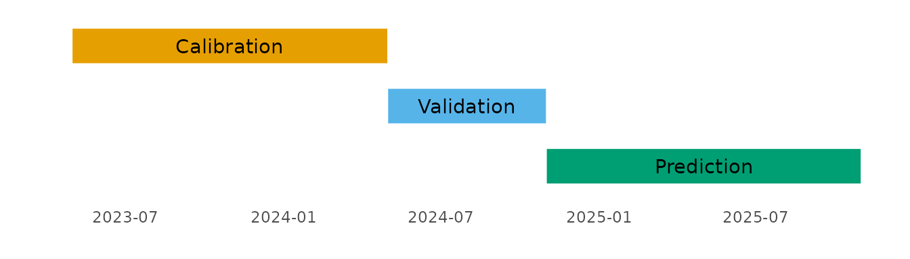

Creating and validating a model
rtt-pipeline.RmdThis vignette provides a walkthrough for how to use the NHSRtt package.
The vignette shows:
- how the data are set up
- how the renege and capacity parameters are calculated
- how the parameter performance can be validated
- how the parameters can be applied to future scenarios
Aims
The aim of the exercise in this vignette is, for a selected acute trust, to predict future activity, and hence waiting times, for all elective activity at that trust.
This is done by developing some model parameters, based on a stock-and-flow approach over a time period (called the calibration period). These parameters are calculated from publicly available data, which are counts of incomplete pathways, completed pathways and new referrals at each time step. The completed and incomplete pathways are broken down into the number of months the individuals in the pathways have been waiting.
These parameters are then applied to a subsequent time period (called the validation period). The parameters are used to generate estimated incomplete activity for this period. This activity is compared with the observed activity to evaluate the modelling.
The final part is to apply the model parameters to some future scenarios to predict future waiting times.
Setting up the data
Conceptually, we want to use a year of data to calibrate parameters, and then the following six months to validate those parameters. We will then use these parameters to predict for the year following the valdiation period.
calibration_start <- as.Date("2023-05-01")
calibration_end <- as.Date("2024-04-30")
validation_start <- calibration_end + 1
validation_end <- as.Date("2024-10-31")
prediction_start <- validation_end + 1
prediction_end <- as.Date("2025-10-31")
analysis_trust <- "RC9" # filter for a single trust
max_months_waited <- 12 # I am only interested in waiting time bins up to 12 months
The public data(source)
can be sourced with the get_rtt_data() function. The data
we are interested from the website are the pathways that are admitted
and non-admitted (these are considered completed pathways), incomplete
(these are people who are still waiting to be admitted), and new RTT
periods (these are new referrals that are entering the referral to
treatment pathway). To specify which dataset to download, the
type argument is set to one of “complete”, “incomplete” or
“referral”. The data are provided by specialty and trust, so can be
aggregated depending on the analysis of interest.
# each metric must be downloaded separately
completes <- NHSRtt::get_rtt_data(
type = "complete",
date_start = calibration_start,
date_end = validation_end,
show_progress = FALSE # can change this to TRUE to see progress
)
incompletes <- NHSRtt::get_rtt_data(
type = "incomplete",
date_start = calibration_start,
date_end = validation_end,
show_progress = FALSE # can change this to TRUE to see progress
)
referrals <- NHSRtt::get_rtt_data(
type = "referral",
date_start = calibration_start,
date_end = validation_end,
show_progress = FALSE # can change this to TRUE to see progress
)Here is what the first 15 rows of data for the completes object looks
like when it comes out of the get_rtt_data() function (this
may change if this is run on a different date as the data update
monthly):
| trust | specialty | period | months_waited | type | value |
|---|---|---|---|---|---|
| R1H | C_100 | 2024-10-01 | <1 | Admitted | 32.285714 |
| R1H | C_100 | 2024-10-01 | 1-2 | Admitted | 33.428571 |
| R1H | C_100 | 2024-10-01 | 2-3 | Admitted | 18.571429 |
| R1H | C_100 | 2024-10-01 | 3-4 | Admitted | 15.714286 |
| R1H | C_100 | 2024-10-01 | 4-5 | Admitted | 4.000000 |
| R1H | C_100 | 2024-10-01 | 5-6 | Admitted | 8.285714 |
| R1H | C_100 | 2024-10-01 | 6-7 | Admitted | 3.857143 |
| R1H | C_100 | 2024-10-01 | 7-8 | Admitted | 10.857143 |
| R1H | C_100 | 2024-10-01 | 8-9 | Admitted | 4.285714 |
| R1H | C_100 | 2024-10-01 | 9-10 | Admitted | 5.285714 |
| R1H | C_100 | 2024-10-01 | 10-11 | Admitted | 8.428571 |
| R1H | C_100 | 2024-10-01 | 11-12 | Admitted | 7.285714 |
| R1H | C_100 | 2024-10-01 | 12-13 | Admitted | 5.714286 |
| R1H | C_100 | 2024-10-01 | 13-14 | Admitted | 3.000000 |
| R1H | C_100 | 2024-10-01 | 14-15 | Admitted | 5.428571 |
For the purposes of this vignette, where we are performing the analysis on all activity (rather than by specialty), we append and aggregate the data before splitting it out again later into three datasets. The data manipulation here takes five steps:
- filter for the trust of interest
- change the “type” column into “Complete”, “Incomplete” and “Referrals”
- convert the months_waited string into an id using the
convert_months_waited_to_id()function - aggregate all the counts by specialty into one overall figure
- create a “period_id” numeric field for the sequential months in the dataset
monthly_rtt <- dplyr::bind_rows(
completes,
incompletes,
referrals
) |>
filter(
trust == analysis_trust
) |>
mutate(
type = case_when(
type == "Non-Admitted" ~ "Complete",
type == "Admitted" ~ "Complete",
type == "New Periods" ~ "Referrals",
.default = type
),
months_waited_id = convert_months_waited_to_id(
months_waited,
max_months_waited
)
) |>
summarise(
value = sum(value),
.by = c(
trust,
period,
type,
months_waited_id
)
) |>
arrange(
type,
months_waited_id,
period
) |>
mutate(
period_id = dplyr::row_number(), # we need period_id for later steps
.by = c(
type,
months_waited_id
)
)| trust | period | type | months_waited_id | value | period_id |
|---|---|---|---|---|---|
| RC9 | 2023-05-01 | Complete | 0 | 1413.429 | 1 |
| RC9 | 2023-06-01 | Complete | 0 | 1429.429 | 2 |
| RC9 | 2023-07-01 | Complete | 0 | 1484.571 | 3 |
| RC9 | 2023-08-01 | Complete | 0 | 1384.857 | 4 |
| RC9 | 2023-09-01 | Complete | 0 | 1570.286 | 5 |
| RC9 | 2023-10-01 | Complete | 0 | 1558.857 | 6 |
The data need to be in a specific format (as described by the function documentation) for the functions to work.
To calculate the renege and capacity parameters, the inputs you needs are:
- Referrals per time step (these are inputs to each time step), where all referrals have waited 0 months
- Complete pathways per time step by the number of months waited
- Incomplete pathways per time step by the number of months waited
Here, we split the data out again into three objects (completes, incompletes and referrals)
calibration_period <- monthly_rtt |>
filter(
between(
period,
calibration_start,
calibration_end
)
) |>
summarise(
value = sum(value),
.by = c(
trust,
period_id,
type,
months_waited_id
)
) |>
dplyr::select(
trust,
period_id,
type,
months_waited_id,
value
)
referrals <- calibration_period |>
filter(
type == "Referrals"
) |>
distinct(
period_id,
value
) |>
rename(
referrals = "value"
)| period_id | referrals |
|---|---|
| 1 | 35380 |
| 2 | 36790 |
| 3 | 35216 |
| 4 | 35380 |
| 5 | 35974 |
| 6 | 36914 |
| 7 | 39022 |
| 8 | 31528 |
| 9 | 38668 |
| 10 | 38112 |
| 11 | 37422 |
| 12 | 36730 |
completes <- calibration_period |>
filter(
type == "Complete"
) |>
distinct(
period_id,
months_waited_id,
value
) |>
rename(
treatments = "value"
)| period_id | months_waited_id | treatments |
|---|---|---|
| 1 | 0 | 1413.429 |
| 2 | 0 | 1429.429 |
| 3 | 0 | 1484.571 |
| 4 | 0 | 1384.857 |
| 5 | 0 | 1570.286 |
| 6 | 0 | 1558.857 |
| 7 | 0 | 1851.714 |
| 8 | 0 | 1663.714 |
| 9 | 0 | 1577.429 |
| 10 | 0 | 1493.143 |
| 11 | 0 | 1465.714 |
| 12 | 0 | 1458.857 |
incompletes <- calibration_period |>
filter(
type == "Incomplete"
) |>
distinct(
period_id,
months_waited_id,
value
) |>
rename(
incompletes = "value"
)| period_id | months_waited_id | incompletes |
|---|---|---|
| 1 | 0 | 28717.71 |
| 2 | 0 | 29707.71 |
| 3 | 0 | 30145.71 |
| 4 | 0 | 27426.86 |
| 5 | 0 | 29318.00 |
| 6 | 0 | 29889.71 |
| 7 | 0 | 30338.00 |
| 8 | 0 | 26303.14 |
| 9 | 0 | 30080.86 |
| 10 | 0 | 31047.71 |
| 11 | 0 | 32260.29 |
| 12 | 0 | 30302.00 |
Generating the model parameters
These inputs are passed into the
calibrate_capacity_renege_params() function.
For occasions where renege counts are negative for the group of
people that have been waiting 0 months, we can tell the modelling to
assume these are under-reported referrals and redistribute these to
referrals. This is done by setting the
redistribute_m0_reneges to TRUE.
params <- calibrate_capacity_renege_params(
referrals = referrals,
completes = completes,
incompletes = incompletes,
max_months_waited = max_months_waited,
redistribute_m0_reneges = TRUE,
full_breakdown = FALSE # this can be set to TRUE to see all the transitions for all months waited at each time step
)| months_waited_id | renege_param | capacity_param |
|---|---|---|
| 0 | 0.1440384 | 0.0420885 |
| 1 | 0.0974161 | 0.0233166 |
| 2 | 0.0891623 | 0.0167214 |
| 3 | 0.0962514 | 0.0136003 |
| 4 | 0.1479731 | 0.0130116 |
| 5 | 0.1150392 | 0.0136997 |
| 6 | 0.1122005 | 0.0142077 |
| 7 | 0.1051311 | 0.0155031 |
| 8 | 0.1370721 | 0.0169077 |
| 9 | 0.1441040 | 0.0178851 |
| 10 | 0.1644553 | 0.0184309 |
| 11 | 0.2024729 | 0.0229946 |
| 12 | 0.2815010 | 0.0445286 |
The renege parameter is a ratio of the mean number of patients that renege from the stock compared with the mean number entering the stock by months waited in the calibration period. The capacity parameter is the same as the renege parameter, but comparing the mean pathways completed with the mean count of individuals entering the stock.
Validate these parameters on a known time series
Pass the parameters to a known timeseries, and calculate an evaluation metric, comparing the predicted count of incomplete pathways with the known count of incomplete pathways.
The example below calculates the mean absolute percentage error (MAPE).
First, the data needs constructing. The data required are:
- a vector of capacity per time step
- a vector of referrals per time step
- a table of counts of incomplete pathways by months waiting for the time step prior to the first time step of the other two data inputs
To create these data we take the full dataset we created earlier and filter for the validation time period.
validation_period <- monthly_rtt |>
filter(
between(
period,
lubridate::floor_date(calibration_end, unit = "months"), # this helps the user pick up the incompletes from the previous month
validation_end
)
) |>
dplyr::select(
trust,
period_id,
type,
months_waited_id,
value
)
validation_referrals <- validation_period |>
filter(
type == "Referrals",
period_id != min(period_id)
) |>
distinct(
period_id,
value
) |>
arrange(
period_id
) |>
pull(
value
)
print(validation_referrals)
#> [1] 37566 39590 41640 35752 37910 39896
validation_capacity <- validation_period |>
filter(
type == "Complete",
period_id != min(period_id)
) |>
summarise(
count = sum(value),
.by = period_id
) |>
arrange(
period_id
) |>
pull(
count
)
print(validation_capacity)
#> [1] 5188 5042 5718 5344 5770 6294
incompletes_at_t0 <- validation_period |>
filter(
type == "Incomplete",
period_id == min(period_id)
) |>
distinct(
months_waited_id,
value
) |>
rename(
incompletes = "value"
)| months_waited_id | incompletes |
|---|---|
| 0 | 30302.000 |
| 1 | 27669.714 |
| 2 | 24388.000 |
| 3 | 21297.143 |
| 4 | 15651.429 |
| 5 | 15359.714 |
| 6 | 14005.429 |
| 7 | 11848.286 |
| 8 | 9223.714 |
| 9 | 8165.429 |
| 10 | 6658.857 |
| 11 | 5682.857 |
| 12 | 10859.429 |
The data are then passed to
apply_params_to_projections() which provides a full table
of stocks at each time step.
validation_performance <- apply_params_to_projections(
capacity_projections = validation_capacity,
referrals_projections = validation_referrals,
incomplete_pathways = incompletes_at_t0,
renege_capacity_params = params,
max_months_waited = max_months_waited
)| period_id | months_waited_id | calculated_treatments | reneges | incompletes | input_treatments |
|---|---|---|---|---|---|
| 1 | 1 | 676.9977 | 2951.901 | 26673.101 | 5188 |
| 1 | 2 | 443.3309 | 2467.094 | 24759.289 | 5188 |
| 1 | 3 | 317.8149 | 2347.379 | 21722.806 | 5188 |
| 1 | 4 | 265.5237 | 3151.404 | 17880.215 | 5188 |
| 1 | 5 | 205.4543 | 1800.528 | 13645.447 | 5188 |
| 1 | 6 | 209.1008 | 1723.367 | 13427.246 | 5188 |
| 1 | 7 | 208.0483 | 1472.406 | 12324.974 | 5188 |
| 1 | 8 | 191.9510 | 1624.070 | 10032.265 | 5188 |
| 1 | 9 | 158.0690 | 1329.174 | 7736.472 | 5188 |
| 1 | 10 | 144.2038 | 1342.848 | 6678.377 | 5188 |
| 1 | 11 | 146.7154 | 1348.238 | 5163.904 | 5188 |
| 1 | 12 | 705.8047 | 4656.671 | 11179.811 | 5188 |
| 1 | 0 | 1514.9857 | 5410.946 | 30640.069 | 5188 |
| 2 | 2 | 408.5133 | 2378.234 | 23886.354 | 5042 |
| 2 | 3 | 308.4222 | 2383.116 | 22067.750 | 5042 |
| 2 | 4 | 258.8852 | 3214.391 | 18249.529 | 5042 |
| 2 | 5 | 224.3590 | 2056.925 | 15598.930 | 5042 |
| 2 | 6 | 177.5700 | 1531.026 | 11936.851 | 5042 |
| 2 | 7 | 190.6619 | 1411.621 | 11824.963 | 5042 |
| 2 | 8 | 190.8667 | 1689.410 | 10444.697 | 5042 |
The mean absolute percentage error (mape) can then be calculated from this.
# calculate mean absolute percentage error
# 1. calculate observed incompletes by months waited and period
observed_incompletes <- validation_period |>
filter(
type == "Incomplete",
period_id != min(period_id)
) |>
summarise(
observed = sum(value),
.by = c(
period_id, months_waited_id
)
) |>
mutate(
period_id = period_id - min(period_id) + 1 # to change the period_ids to the same scale as the ones calculated
)
# 2. quantify observed incompletes by months waited and period
estimated_incompletes <- validation_performance |>
dplyr::select(
"period_id",
"months_waited_id",
predicted = "incompletes"
)
# 3. calculate mape
mape <- observed_incompletes |>
left_join(
estimated_incompletes,
by = join_by(
period_id, months_waited_id
)
) |>
mutate(
absolute_percentage_error = abs(
(predicted - observed) / observed
)
) |>
summarise(
mean_absolute_percentage_error = mean(
absolute_percentage_error
)
) |>
pull(mean_absolute_percentage_error)
print(mape)
#> [1] 0.03814534The mean absolute error (mae) can also be calculated:
mae <- observed_incompletes |>
left_join(
estimated_incompletes,
by = join_by(
period_id, months_waited_id
)
) |>
mutate(
absolute_error = abs(
predicted - observed
)
) |>
summarise(
mean_absolute_error = mean(
absolute_error
)
) |>
pull(mean_absolute_error)
print(mae)
#> [1] 522.2354The mean absolute percentage error for the modelled parameters is 3.8% and the mean absolute error is 522.2.
Future scenarios
This section describes how to apply the parameters to different future scenarios. The process is identical to the validation process, but without the evaluation step (as we are predicting for a time period with unknown data).
The three scenarios are:
- referrals increasing by 5% and capacity reducing by 5% compared with the equivalent months in the previous year
- referrals decreasing by 5% and capacity increasing by 5% compared with the equivalent months in the previous year
- using a timeseries method (TBATS) to forecast referrals and capacity
## Scenario 1 data
# move the date forward a year and uplift referrals and lower the completed
# pathways; then filter for the dates of interest
scenario_1 <- monthly_rtt |>
mutate(
period = period %m+% months(12),
value = case_when(
type == "Referrals" ~ value * 1.05,
type == "Complete" ~ value * 0.95,
.default = value
)
) |>
filter(
between(
period,
prediction_start,
prediction_end
)
)
# scenario 1 referrals
scenario_1_referrals <- scenario_1 |>
filter(
type == "Referrals",
period_id != min(period_id)
) |>
arrange(
period_id
) |>
pull(
value
)
scenario_1_capacity <- scenario_1 |>
filter(
type == "Complete",
period_id != min(period_id)
) |>
summarise(
count = sum(value),
.by = period_id
) |>
arrange(
period_id
) |>
pull(
count
)
scenario_1_incompletes_at_t0 <- scenario_1 |>
filter(
type == "Incomplete",
period_id == min(period_id)
) |>
distinct(
months_waited_id,
value
) |>
rename(
incompletes = "value"
)
## Scenario 2
# move the date forward a year, uplift completed pathways and lower the
# referrals; then filter for the dates of interest
scenario_2 <- monthly_rtt |>
mutate(
period = period %m+% months(12),
value = case_when(
type == "Complete" ~ value * 1.05,
type == "Referrals" ~ value * 0.95,
.default = value
)
) |>
filter(
between(
period,
prediction_start,
prediction_end
)
)
scenario_2_referrals <- scenario_2 |>
filter(
type == "Referrals",
period_id != min(period_id)
) |>
arrange(
period_id
) |>
pull(
value
)
scenario_2_capacity <- scenario_2 |>
filter(
type == "Complete",
period_id != min(period_id)
) |>
summarise(
count = sum(value),
.by = period_id
) |>
arrange(
period_id
) |>
pull(
count
)
scenario_2_incompletes_at_t0 <- scenario_2 |>
filter(
type == "Incomplete",
period_id == min(period_id)
) |>
distinct(
months_waited_id,
value
) |>
rename(
incompletes = "value"
)For the timeseries data, using tbats, we want a slightly longer dataset than we have available, so first we download an extra six months of data to append onto the start of the existing dataset, before doing the data manipulation prior to the forecasting. This will give us two years in total.
# obtain and manipulate tbats data
additional_start <- calibration_start %m-% months(6)
additional_end <- calibration_start - 1
# each metric must be downloaded separately
additional_completes <- NHSRtt::get_rtt_data(
type = "complete",
date_start = additional_start,
date_end = additional_end
)
additional_incompletes <- NHSRtt::get_rtt_data(
type = "incomplete",
date_start = additional_start,
date_end = additional_end
)
additional_referrals <- NHSRtt::get_rtt_data(
type = "referral",
date_start = additional_start,
date_end = additional_end
)
# append and manipulation
additional_monthly_rtt <- dplyr::bind_rows(
additional_completes,
additional_incompletes,
additional_referrals
) |>
filter(
trust == analysis_trust
) |>
mutate(
type = case_when(
type == "Non-Admitted" ~ "Complete",
type == "Admitted" ~ "Complete",
type == "New Periods" ~ "Referrals",
.default = type
),
months_waited_id = convert_months_waited_to_id(
months_waited,
max_months_waited
)
) |>
summarise(
value = sum(value),
.by = c(
trust,
period,
type,
months_waited_id
)
) |>
arrange(
type,
months_waited_id,
period
) |>
mutate(
# here we relate the period_id to the period_id in the monthly_rtt data
# which we will apend this additional data to
period_id = (lubridate::interval(
min(monthly_rtt$period), period
) %/% months(1)) + 1
)
tbats_monthly_rtt <- bind_rows(
additional_monthly_rtt,
monthly_rtt
) |>
arrange(
type, months_waited_id, period
)
## Scenario 3
forecast_function <- function(rtt_table, number_timesteps) {
fcast <- rtt_table |>
pull(value) |>
ts(frequency = 12) |>
forecast::tbats() |>
forecast::forecast(h = number_timesteps) |>
tidyr::as_tibble() |>
pull(`Point Forecast`)
return(fcast)
}
scenario_3_referrals <- tbats_monthly_rtt |>
filter(
type == "Referrals"
) |>
forecast_function(
number_timesteps = 12
) |>
tail(11)
scenario_3_capacity <- tbats_monthly_rtt |>
filter(
type == "Complete"
) |>
summarise(
value = sum(value),
.by = period_id
) |>
forecast_function(
number_timesteps = 12
) |>
tail(11)
scenario_3_incompletes_at_t0 <- tbats_monthly_rtt |>
filter(
type == "Incomplete"
) |>
group_by(months_waited_id) |>
group_split() |>
lapply(
forecast_function,
number_timesteps = 1
) |>
unlist() |>
setNames(nm = 0:12) |>
# turn the named vector into a two column tibble
(\(x) dplyr::tibble(
months_waited_id = as.numeric(names(x)),
incompletes = x
))()
For each scenario, the data are passed to the
apply_params_to_projections() function and then appended to
each other.
scenario_1_projections <- apply_params_to_projections(
capacity_projections = scenario_1_capacity,
referrals_projections = scenario_1_referrals,
incomplete_pathways = scenario_1_incompletes_at_t0,
renege_capacity_params = params,
max_months_waited = max_months_waited
) |>
mutate(
scenario = "Scenario 1"
)
scenario_2_projections <- apply_params_to_projections(
capacity_projections = scenario_2_capacity,
referrals_projections = scenario_2_referrals,
incomplete_pathways = scenario_2_incompletes_at_t0,
renege_capacity_params = params,
max_months_waited = max_months_waited
) |>
mutate(
scenario = "Scenario 2"
)
scenario_3_projections <- apply_params_to_projections(
capacity_projections = scenario_3_capacity,
referrals_projections = scenario_3_referrals,
incomplete_pathways = scenario_3_incompletes_at_t0,
renege_capacity_params = params,
max_months_waited = max_months_waited
) |>
mutate(
scenario = "Scenario 3"
)
projections <- bind_rows(
scenario_1_projections,
scenario_2_projections,
scenario_3_projections
) |>
select(
"period_id",
"months_waited_id",
value = "incompletes",
"scenario"
) |>
# here we adjust the period_id field to follow on from the latest period_id in
# the validation dataset (because the apply_params_to_projections function
# resets the earliest period_id to 1)
mutate(
# 1 is added to the end because the first period is used for the count of
# incomplete pathways at t=0
period_id = period_id + max(validation_period$period_id) + 1
)Here is a sample of the projection data:
| period_id | months_waited_id | value | scenario |
|---|---|---|---|
| 20 | 1 | 26737.499 | Scenario 1 |
| 20 | 2 | 23338.018 | Scenario 1 |
| 20 | 3 | 20439.579 | Scenario 1 |
| 20 | 4 | 16115.728 | Scenario 1 |
| 20 | 5 | 15480.065 | Scenario 1 |
| 20 | 6 | 12460.012 | Scenario 1 |
| 20 | 7 | 11210.698 | Scenario 1 |
| 20 | 8 | 8671.954 | Scenario 1 |
| 20 | 9 | 8905.127 | Scenario 1 |
| 20 | 10 | 6159.941 | Scenario 1 |
We need to attach the date onto the data to help visualising it:
date_lkp <- dplyr::tibble(
period = seq(
# 1 is added to the end because the first period is used for the count of
# incomplete pathways at t=0
from = prediction_start %m+% months(1),
to = prediction_end,
by = "months"
),
period_id = seq(
from = min(projections$period_id),
to = max(projections$period_id),
by = 1
)
)
projections <- projections |>
left_join(
date_lkp,
by = join_by(
period_id
)
)This data can now be appended to the observed incomplete pathways data to visualise how incomplete pathways change by the number of months waited over the projection period:
monthly_rtt |>
filter(
type == "Incomplete"
) |>
select(
"period", "period_id", "months_waited_id", "value"
) |>
mutate(
scenario = "Observed"
) |>
bind_rows(
projections
) |>
mutate(
scenario = case_when(
scenario == "Scenario 1" ~ "%5 increase referrals\n5% decrease capacity",
scenario == "Scenario 2" ~ "%5 increase capacity\n5% decrease referrals",
scenario == "Scenario 3" ~ "TBATS",
.default = scenario
),
scenario = factor(
scenario,
levels = c(
"Observed",
"%5 increase referrals\n5% decrease capacity",
"%5 increase capacity\n5% decrease referrals",
"TBATS"
)
),
months_waited_id = paste(
months_waited_id,
"months waited"
),
months_waited_id = factor(
months_waited_id,
levels = paste(0:12, "months waited")
)
) |>
ggplot(
aes(
x = period,
y = value
)
) +
geom_line(
aes(
group = interaction(months_waited_id, scenario),
linetype = scenario,
colour = scenario
)
) +
facet_wrap(
facets = vars(months_waited_id),
scales = "free_y",
ncol = 3
) +
theme_bw() +
theme(
legend.position = "bottom"
) +
labs(
y = "Incomplete pathways",
x = "",
title = "Count of incomplete pathways with three future scenarios"
) +
scale_colour_manual(
name = "Scenario",
values = c(
"Observed" = "black",
"%5 increase referrals\n5% decrease capacity" = "#D81B60",
"%5 increase capacity\n5% decrease referrals" = "#1E88E5",
"TBATS" = "#FFC107"
)
) +
scale_linetype_manual(
name = "Scenario",
values = c(
"Observed" = "solid",
"%5 increase referrals\n5% decrease capacity" = "longdash",
"%5 increase capacity\n5% decrease referrals" = "longdash",
"TBATS" = "longdash"
)
)
For additional ways of visualising wait times that have proved effective, please see the other vignette.